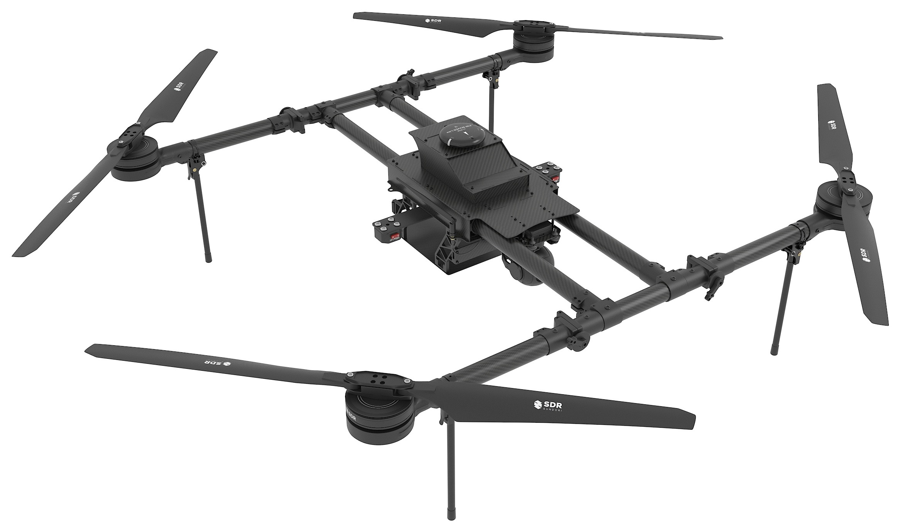
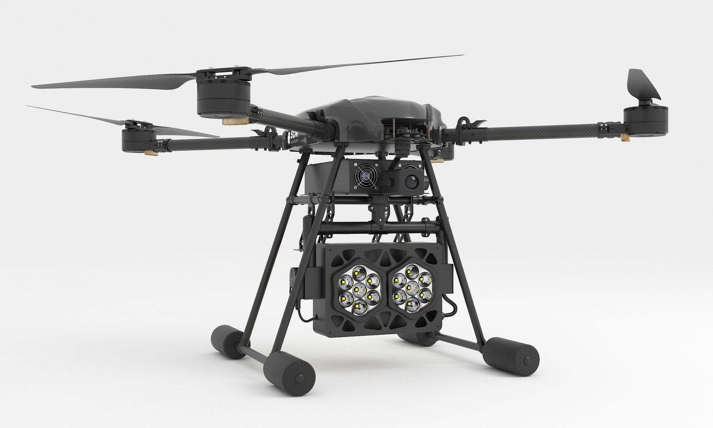
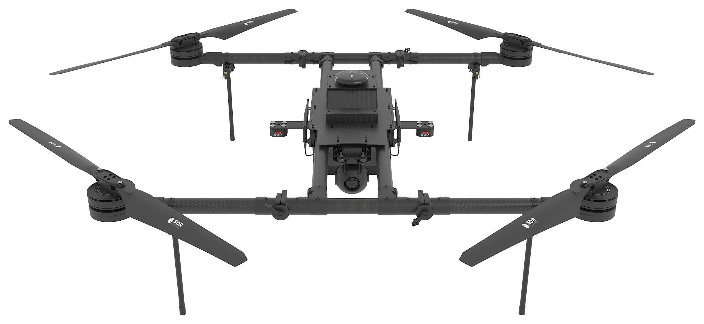
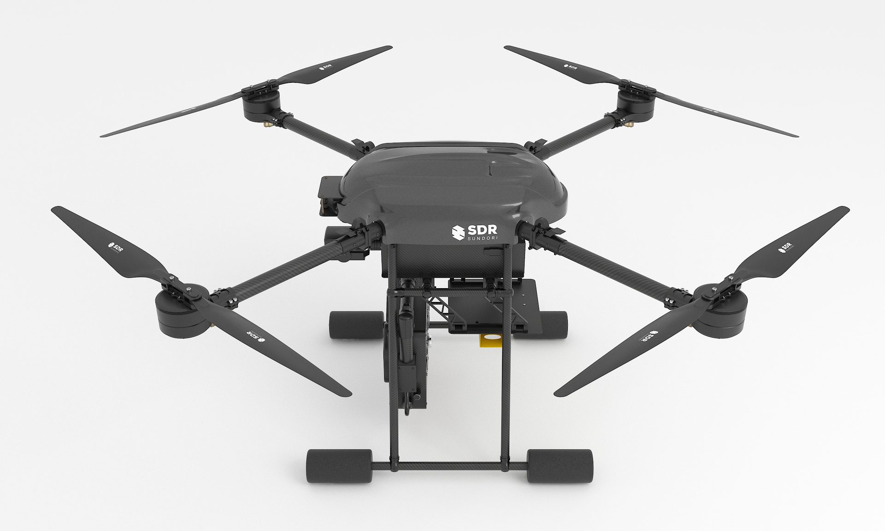
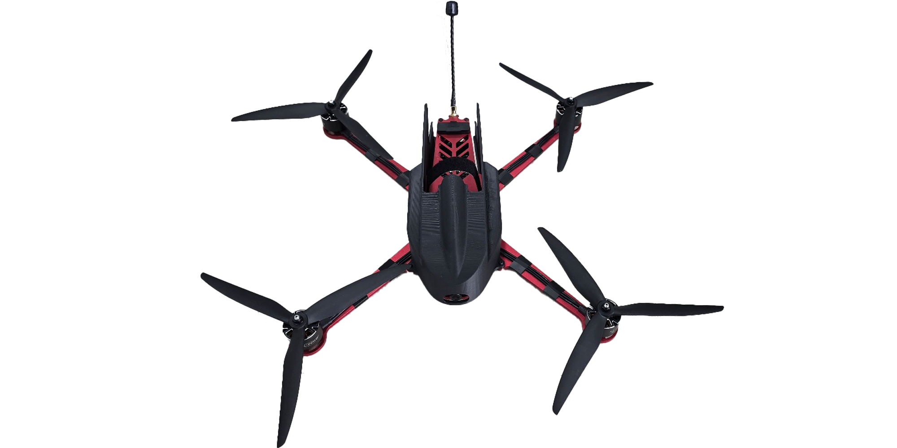

SDR Drone Inc. holds the global commercialization rights to the Sundori Drone Platform — a NDAA-compliant, combat-validated family of unmanned aerial systems deployed across Korean armed forces and allied operations in Ukraine. Bringing thirty years of platform engineering to U.S. DoD, allied defense, and international markets.

SDR builds the entire stack — flight control, integrated electronics, swarm communications, and tactical software — under one roof. Every component is designed for the operational reality of defense, public safety, and industrial deployment.

An AI-based intelligent swarm autonomous platform. Automatic formation flight, leader-follower tracking, AI path collision avoidance, and FANET mesh communications — a tactical control system designed for real operational environments, not lab demonstrations.
In-house motherboard combining flight control, controllers, and communications onto a single PCB. The architecture eliminates 40% of components, simplifies assembly, optimizes weight, and enables a 30% manufacturing-cost reduction versus competitors. 100% domestic component sourcing.

Flawless operational capability, proven through countless demonstrations and actual missions across five branches of the Republic of Korea armed forces.
SDR's platform is deployed across three domains — each demanding distinct mission profiles, payloads, and certifications. The same core technology adapts to all of them.
Selected by presidential directive as one of two domestic drone companies on the Task Force for Strengthening Defense Drone Capabilities. Standard platform across all five branches of Korean armed forces.
Police and Fire Department deployments for emergency disaster response, search-and-rescue operations, and public infrastructure surveillance — all on the same operational platform.
Oil & gas infrastructure protection, agricultural spraying, smart-farm operations, and global procurement programs across the United States, Southeast Asia, and Central Asia.
SDR's drone lineup spans tethered industrial systems, long-endurance surveillance, vertical takeoff, and tactical strike — all sharing the SDR-ONE control architecture.

Continuous-power tethered drone for persistent surveillance, security perimeters, and event coverage. Wired primary, wireless failover.
Extended-flight platform for industrial inspection, agricultural mapping, and patrol missions where loiter time is the constraint.

Compact tactical drone designed for precision strike missions. Domestic defense certification completed; overseas export licensing in progress.
From U.S. oil-infrastructure protection to Mongolian technology transfer programs, SDR's platforms are operating in active commercial and defense engagements worldwide.
Whether your mission is defense, public safety, or industrial operations, the SDR platform adapts. Talk to our team about a deployment, partnership, or technology transfer.